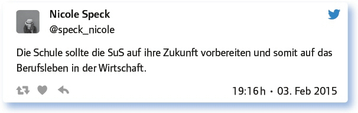
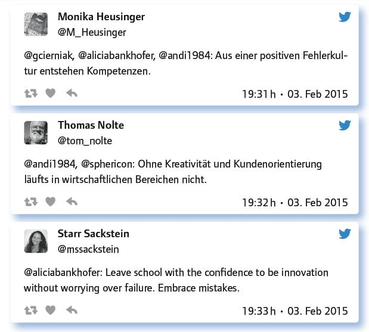

von Peter Ringeisen
Kompetenzen, Kompetenzen, Kompetenzen – wohin man sieht. Der seit 2014/15 in Bayern eingeführte „LehrplanPLUS“ ist beispielsweise konsequent von den zu erreichenden Kompetenzen her gedacht. Doch die Orientierung am Kompetenz-Begriff ist länderübergreifen- de Lehrplanrealität. Wo man früher lesen lernte, erwirbt man jetzt „Lesekompetenz“. Für die Entwicklung der Persönlichkeit und des Charakters müssen „persönliche und soziale Kompetenzen“ entwickelt werden.
Professionelle Reflexion aber fragt, was sich tatsächlich verändert: gesellschaftlich, technisch, bei den Anforderungen für Ausbildung und Studium. Und professionelle Reflexion im pädagogischen Kontext fragt, wie man mit diesen Veränderungen sinnvoll umgehen kann. Entsprechend könnte man den Titel des #EDchatDE mit „Wie kann man Kenntnisse und Kompetenzen vermitteln, die Jugendliche heute erwerben sollen?“ umschreiben. Damit ist auch eine normative Seite dieser Kenntnisse schon mit angesprochen. Es ging nicht vor allem um die Frage, was Kinder lernen wollen, sondern auch um die Frage, was Kinder lernen sollen.
Zunächst beschäftigten sich die Teilgeber – wie so oft – mit Aspekten der Definition. Für den Kontext dieses #EDchatDE wurde gesetzt: „Skills“ seien Kompetenzen plus Kenntnisse. (Freunde des Kompetenzbegriffs werden nun einwenden, auch die Definition von „Kompetenz“ schließe Kenntnisse mit ein – sie seien um Nachsicht gebeten.)
Bei den als nötig empfundenen Skills wurden häufig vernetztes Denken genannt, Kreativität und die Klassiker: Lesen, Schreiben, Rechnen, aber auch der Umgang mit der digitalen Welt.
„Skills“ sind Kompetenzen und Kenntnisse. Welche braucht man bis zum Verlassen unterschiedlicher Schulformen?
Problemlöse-Strategien, Kreativität, ICT-Grundkenntnisse, Selbstständigkeit, Reflexionsfähigkeit.
Kulturtechniken: Lesen, Schreiben, Rechnen, künstlerisches und musikalisches Gestalten, analytische und Soft/Social Skills, Partizipation.
Neugier, richtiges Fragen, vernetztes Denken, Fähigkeit zum autonomen und Teamlernen, personal Mastery, Systemwissen.
Freude am Lernen, Rechtschreibsicherheit, Kopfrechenfähigkeit, Informationen finden, bewerten und verknüpfen
Nun wurden die Unterschiede zwischen dem 21. und dem 20. Jahrhundert in den Blick genommen: Was ist anders? Und die Antworten waren relativ eindeutig. Neu ist in jedem Fall die Notwendigkeit, mit digitalen Medien zurechtzukommen: sie bedienen zu können, Inhalte kritisch einzuschätzen, Informationen zu filtern und kreativ und effizient damit zu arbeiten. Diese Tätigkeiten wurden von einigen als anspruchsvoller eingeschätzt im Vergleich zu früher.
Was ist im 21. Jahrhundert anders als im 20.? Welche „Skills“ sind dazugekommen, welche weggefallen?
Dazugekommen ist: digital literacy. Informationsbeschaffung und -verwaltung im Web ist präsenter und wesentlicher denn je.
Erhöhte Komplexität erfordert systemisches Denken und die Fähigkeit, komplexe Probleme selbstständig zu lösen.
Weggefallen sind: Kurzschrift, Rechenschieber. Dazugekommen sind: BLOG, Computer, Algebra System. Der Taschenrechner ist mega out.
Früher musste man nicht so oft Informationen bewerten. Das muss man nun nach jedem Klick.
Im folgenden ging es um den Zusammenhang zwischen dem Begriff „Skills“ und der Wirtschaft sowie darum, ob sich die Schule zu sehr als Lieferantin der Wirtschaft andiene, wenn sie sich um „Skills“ kümmere.
Das Wort „Skills“ kommt aus dem Wirtschaftsleben. Ist die Schule in Sachen „Skills“ eine Dienstmagd der Wirtschaft?

Nun wendeten sich die Teilgeber wieder der Seite der Lehrkräfte zu. Wenn es Vorstellungen gibt, was die Schüler am Ende der Schulzeit wissen und können sollen, – was (und wie) müssen dann die Lehrkräfte lehren?
Bildung zeichnet sich durch andere Fähigkeiten und Kenntnisse aus als „Skills“, die ein Beruf fordert. Was muss Schule lehren?
Schule muss lehren, dass »das eigene« immer relativ ist, nie absolut und so Fundamentalismen vorbeugen.
Mitleid, Empathiefähigkeit, Gutmenschentum, ökologische Verantwortung etc. All das läuft der Ökonomie diametral entgegen.
Selbstvertrauen, nicht nur den Leistungsgedanken, die Muße, auch mal an scheinbar unnützen Sachen zu verweilen …
Auch, dass es sich lohnt, sich mit Ehrgeiz tief in eine Materie einzuarbeiten und am Ende stolz zu sein.
Difficult: Today’s graduates will have 5 to 15 careers in their lifetime.
Antworte auf 3 Tweets unterschiedlicher Teilgeberinnen a) zustimmend, b) kritisch, c) provozierend!

Dann ging es um Mittel und Wege zum Erreichen von Bildungszielen.
Wie kann Schule das Ziel Bildung erreichen und dabei „Skills“ fördern? Welche Didaktik, Inhalte, Methoden helfen dabei?
Bildung und Kompetenzerwerb durch Förderung der Lernerautonomie
Learning must be student centered, personalized and mobile.
Mystery, Planspiele, Debatten etc., statt Buch auf und Aufgabe 1 bis 5 erledigen. Ach ja und natürlich: Explore, Create, Share.
Lernen relevant machen durch Problemorientierung, Kooperationen zwischen Schulen und Gesellschaft.
Mit SuS (systemdynamische und agentenbasierte) Modelle bauen, systemische Spiele spielen (BoothSweeney, System Thinking, Playbook).
Die Rolle der digitalen Medien beim Aufbau von Bildung und Skills wurde im Folgenden thematisiert. Als Vorteile des digitalen Ansatzes stellten sich heraus: Der Aspekt des Spielerischen; die Möglichkeit, das Lernen in einer persönlichen Lernumgebung (PLE, personal learning environment) zu personalisieren; die Transparenz, Übersichtlichkeit und ständige Verfügbarkeit.
Wie können digitale Medien helfen, Bildung und Skills umfassend zu lehren?

Welche Anregungen, Fragen hast du sonst noch zum Thema?
Students do not need to be entertained – they need to be engaged.
Ein schlechter Lehrer mit digitalen Medien bleibt ein schlechter Lehrer mit digitalen Medien. Und andersrum.
Ich treffe immer wieder auf Lehrer, die z. B. den Begriff »blended learning« nicht kennen. Müssen Skills erst Lehrern beibringen!
Wir, d. h. der #EDchatDE und deren Makers, müssen auch aus der Filterblase raus und Brücken bauen. Das ist extrem wichtig.
Fazit:
Einigkeit bestand weitgehend darüber, dass das 21. Jahrhundert komplexeres Denken erfordert, geschickten Umgang mit einer Flut an Information und Vertrautheit mit den sich wandelnden Möglichkeiten der (internationalen) Kommunikation. Aufgabe der Schule ist es, auf diese Anforderungen vorzubereiten und dabei Möglichkeiten der Kontextualisie- rung und der Umsetzung ins Spielerische zu nutzen.
Link zum vollständigen Protokoll: